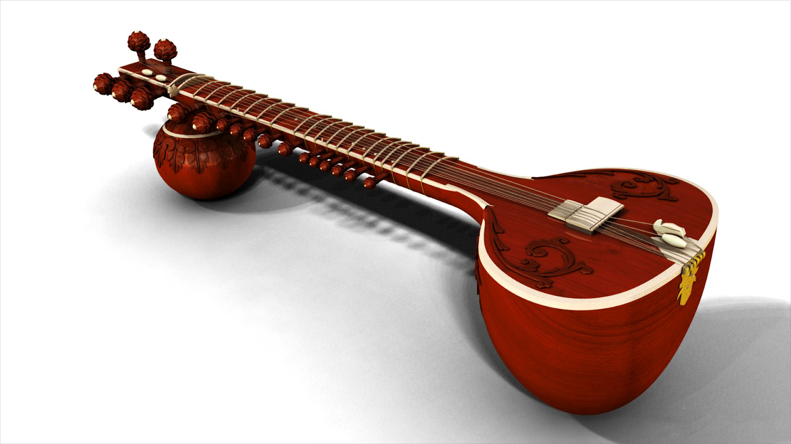
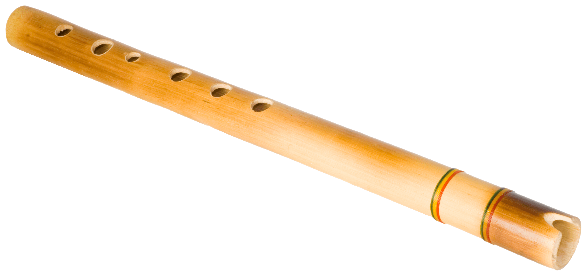
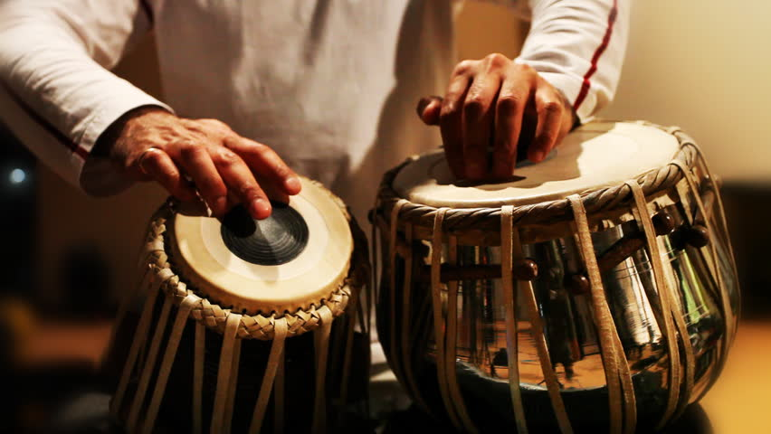
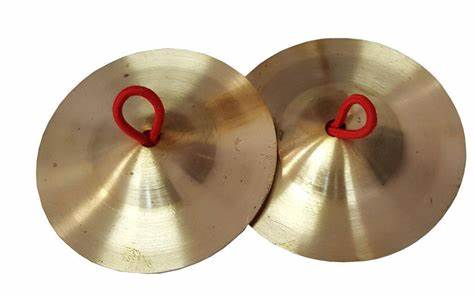

Musical Instruments
-
The arrangement of sounds in different frequencies called notes in a way that is pleasant to hear is called Music.
-
The instruments which make musical sounds are called musical instruments.
-
Examples of musical instruments are : Sitar, Violen, Guitar, Piano, Flute etc.
Types of Musical Instruments :
-
There are mainly 4 types of musical instruments :
-
Stringed musical instruments
-
Wind musical instruments
-
Membrane musical instruments
-
Plate type musical instruments
Stringed Musical Instruments :

-
They produce musical sounds by the vibrations of stretched strings.
-
In a stringed musical instrument, thin metal strings (metal wires) are fixed tightly between 2 points.
-
When the stretched string of a musical instrument is plucked or bowed with the fingers of our hands, the strings starts vibrating and produce sounds.
-
The examples of stringed musical instruments are : Sitar, Violen, Guitar, Piano etc.
Wind Musical Instruments :

-
They produce musical sounds by the vibrations of air columns inside them.
-
The examples of wind musical instruments are : Trumpet, Flute, Shehnai etc.
Membrane type Instruments :

-
Membrane is thin sheet of skin.
-
Membrane type musical instruments produce sounds by the vibration of thin, stretched membranes or streched skins.
-
In this a thin membrane fixed tightly over a hollow wooden drum vibrates and produces sound.
-
The examples of membrane type musical instruments are : Tabla, Dholak, Drum etc.
Plate type Musical Instruments

-
They produce musical sounds by the vibration of thick plates or objects made of plate.
-
The examples of Plate type Musical Instruments are : Cymbals, Bell, Noot etc.